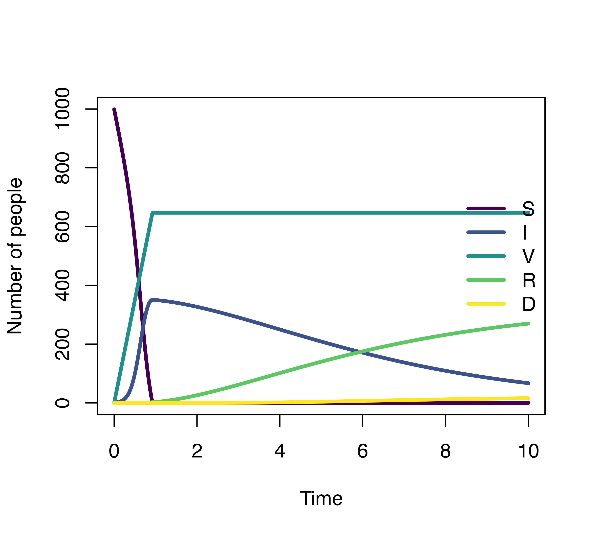
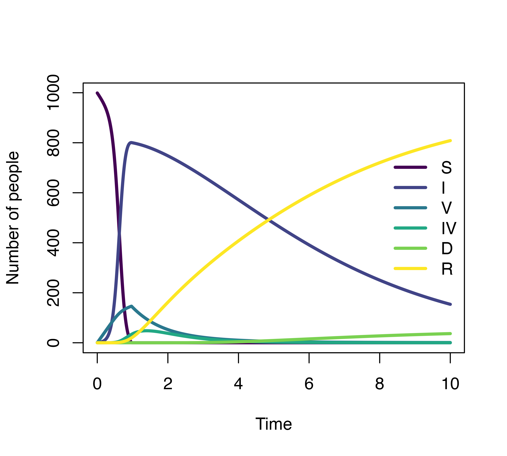

1. Simple SIR model with gamma distributed lengths of stay
The SIR model uses 3 compartments: S (susceptible), I (infected), R (recovered) to describe clinical status of individuals. We use the most simple form of SIR model to demonstrate how to define the distribution of the lengths of stay distribution.
The model equations are:
\[S_{t+1} - S_{t} = -\lambda S_{t} = -\frac{\beta I_{t}}{N}S_{t}\] \[I_{t+1} - I_{t} = \frac{\beta I_{t}}{N}S_{t} - \gamma I_{t}\] \[R_{t+1} - R_{t} = \gamma I_{t}\]
- \(N\): total population size, \(N = S + I + R\)
- \(\beta\): the product of contact rates and transmission probability; usually we define \(\lambda =\frac{\beta I_{t}}{N}\) as the force of infection
- \(\gamma\): recovery rate
Usually to solve the model easier we make an assumption that the recovery rate \(\gamma\) is constant, this will leads to an exponentially distributed length of stay i.e most individuals recover after 1 day being infected.
A more realistic length of stay distribution can look like this, of which most patients recovered after 4 days. We defined this using a gamma distribution with shape = 3 and scale = 2.

The model now look like this:
Model specification
Model transition
We have two transitions S -> I and
I -> R in this case. The transitions are specified in a
list follow this format "transition" = equation, of which
equation is defined with one of our functions for waiting time
distribution.
Initial state
Use a vector to define the compartments with their assigned names and
initial values in the format
compartment_name = initial_value:
initialValues <- c(
S = 999,
I = 1,
R = 0
)Model parameters
If we use a math expression, any symbols except the compartment names
are parameters, and would be defined by constant values. There are two
constant parameters in our example: beta and
N:
parameters <- c(
beta = 0.012,
N = 1000
)Model application
Time step specification
We run the model for 30 days and give output at 0.01 daily intervals. The default interval (time step) is 1 if not declared explicitly.
simulationDuration <- 30
timeStep <- 0.01
mod <- sim(transitions = transitions,
initialValues = initialValues,
parameters = parameters,
simulationDuration = simulationDuration,
timeStep = timeStep)
head(mod)
#> Time S I R
#> 1 0.00 999.0000 1.000000 0.000000e+00
#> 2 0.01 998.9880 1.011982 5.543225e-06
#> 3 0.02 998.9759 1.024097 2.219016e-05
#> 4 0.03 998.9636 1.036346 5.000038e-05
#> 5 0.04 998.9512 1.048730 8.903457e-05
#> 6 0.05 998.9386 1.061252 1.393545e-04
plot(mod)2. How the algorithm work?
In the SIR model, all infected individuals are presented by a single compartment I and have the same recovery rate \(\gamma\).
We want the recovery rate of individuals who had been infected for 1 day differ from the recovery rate of 2-day infected patients. So rather than using one compartment for infected (I), we define multiple infected sub-compartments. The number of sub-compartments depends on the maximum day we expect all infected individuals would be recovered.
For example, if we expect a disease with a maximum 4 days of infection, we will end up with 4 sub-compartments. Each sub-compartment has its own recovery rate \(\gamma_{1}\), \(\gamma_{2}\), \(\gamma_{3}\), \(\gamma_{4}\). At day 4 it is certain that the patient will recover (because we assume that this disease has a maximum 4 days of infection), \(\gamma_{4} = 1\).
Let \(R_1 + R_2 + R_3 + R_4 = \Sigma R\). We have \(\frac{R_1}{\Sigma R} = p_1\), \(\frac{R_2}{\Sigma R} = p_2\), \(\frac{R_3}{\Sigma R} = p_3\), \(\frac{R_4}{\Sigma R} = p_4\). Our mission is to estimate \(\gamma_{1}\), \(\gamma_{2}\), \(\gamma_{3}\) to obtain \(p_1\), \(p_2\), \(p_3\), \(p_4\) that fit a pre-defined distribution at the equilibrium state. This can be obtained by setting:
\[\gamma_{i} = \frac{p_i}{1 - \sum_{j=1}^{i-1}p_j}\]
For a given length of stay distribution, we identify the maximum
length of stay using its cumulative distribution function. Because
cumulative distribution function is asymptotic to 1 and never equal to
1, we need to set a value that is acceptable to be rounded to 1. If we
want a cumulative probability of 0.999 to be rounded as 1, we set the
error tolerance threshold as 1 - 0.999 = 0.001 (specified
by the argument errorTolerance = 0.001). The time when
cumulative probability = 0.999 will be set as the maximum length of stay
of the compartment. Default errorTolerance of
denim is set at 0.001.
3. Waiting time distribution
Current available distribution in this package including:
d_exponential(rate): Discrete exponential distribution with parameterrated_gamma(scale, shape): Discrete gamma distribution with parametersscaleandshaped_weibull(scale, shape): Discrete Weibull distribution with parametersscaleandshaped_lognormal(mu, sigma): Discrete log-normal distribution with parametersmuandsigma
You can define other type of transitions such as:
Mathematical expression: Transition defined with a string value such as
"beta * S * I / N"will be converted to a mathematical expression. You will need to define parameters that are not compartment names in theparametersargumentConstant: Transition defined with a numerical value such as
1,2will be converted to a constant. This is to define the number of individuals moving in a time step.transprob(x): Every time step a fixed percentage of the left compartment transit to the right compartment, this is also a convenient way to define \(R_t - R_{t-1} = \gamma I\) which we can input"I -> R" = transprob(gamma)nonparametric(waitingTimes...): A vector of values, could be numbers, percentages, density of the length of stay based on real data,denimwill convert it into a distributionmultinomial(probabilities): A convenient way to define several probabilities of a compartment transit to many compartments, may or may not in a time step. For example,"V -> VA, VS, VH" = multinomial(0.6, 0.3, 0.1)means 60% ofVwill becomeVA, 30% becomeVSand 10% becomeVH. If we continue to define the length of stay distribution for these transitions e.g"V -> VA" = d_gamma(3, 2), probabilities defined withmultinomial()is not the percentage of the left compartment transit in each time step, but the percentage of individuals move toVAat the equilibrium state. If we do not define further length of stay distribution,"V -> VA, VS, VH" = multinomial(0.6, 0.3, 0.1)is the percentage ofVtransit to the right compartments per time step similar to atransprob()function. See more detailed explanations in the Multiple transitions from a compartment section.
4. Multiple transitions from a compartment
We have many ways to define the type of transition when there are two or more transitions from a compartment. Consider this example:
There are two scenarios in this example:
Susceptible individuals can be infected or vaccinated. The assumption here is they will be infected first (
S -> I), and then the rest of them who were not infected will get vaccinated (S -> V).Infected individuals can recover or die. If the mortality probability is known, we can implement it into the model, for example by defining
0.9 * I -> R(90% individuals will recover) and then0.1 * I -> D(10% of them die). By doing so, we ensure that the mortality probability is 10%, while also define the length of stay of individuals at the infected state before recover or die follows gamma or log-normal distribution, respectively.
We can define the model for this example as follows:
transitions <- list(
"S -> I" = "beta * S * I / N",
"S -> V" = 7,
"0.9 * I -> R" = d_gamma(3, 2),
"0.1 * I -> D" = d_lognormal(2, 0.5)
)
initialValues <- c(
S = 999,
I = 1,
R = 0,
V = 0,
D = 0
)
parameters <- c(
beta = 0.12,
N = 1000
)
simulationDuration <- 10
timeStep <- 0.01
mod <- sim(transitions = transitions,
initialValues = initialValues,
parameters = parameters,
simulationDuration = simulationDuration,
timeStep = timeStep)
plot(mod)
Tips: Instead of writing:
"0.9 * I -> R" = d_gamma(3, 2),
"0.1 * I -> D" = d_lognormal(2, 0.5)You can also use the multinomial(), then define the
length of stay distribution and obtain the same result:
"I -> R, D" = multinomial(0.9, 0.1),
"I -> R" = d_gamma(3, 2),
"I -> D" = d_lognormal(2, 0.5)5. Another example
transitions <- list(
"S -> I" = "beta * S * (I + IV) / N",
"S -> V" = 2,
"0.1 * I -> D" = d_lognormal(2, 0.5),
"0.9 * I -> R" = d_gamma(3, 2),
"V -> IV" = "0.1 * beta * V * (I + IV) / N",
"IV -> R" = d_exponential(2)
)
initialValues <- c(
S = 999,
I = 1,
R = 0,
V = 0,
IV = 0,
D = 0
)
parameters <- c(
beta = 0.12,
N = 1000
)
simulationDuration <- 10
timeStep <- 0.01
mod <- sim(transitions = transitions,
initialValues = initialValues,
parameters = parameters,
simulationDuration = simulationDuration,
timeStep = timeStep)
plot(mod)